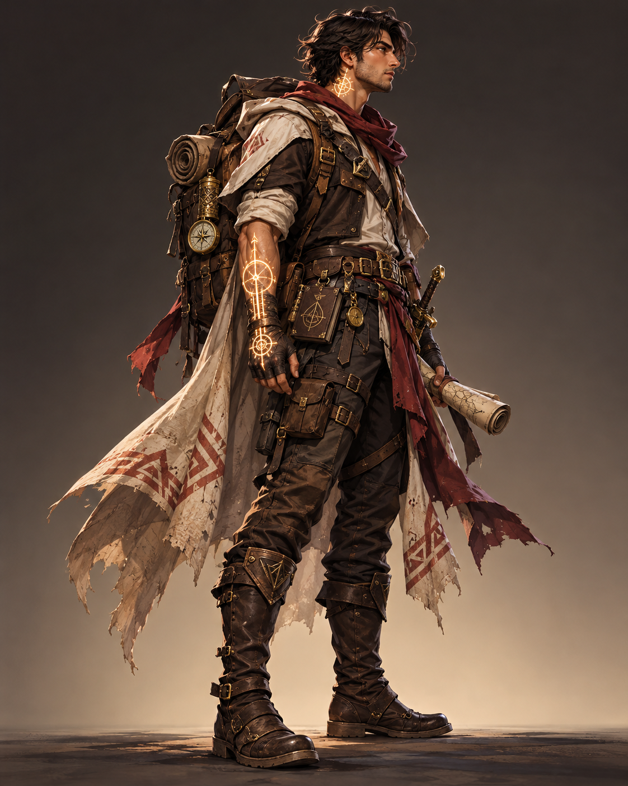
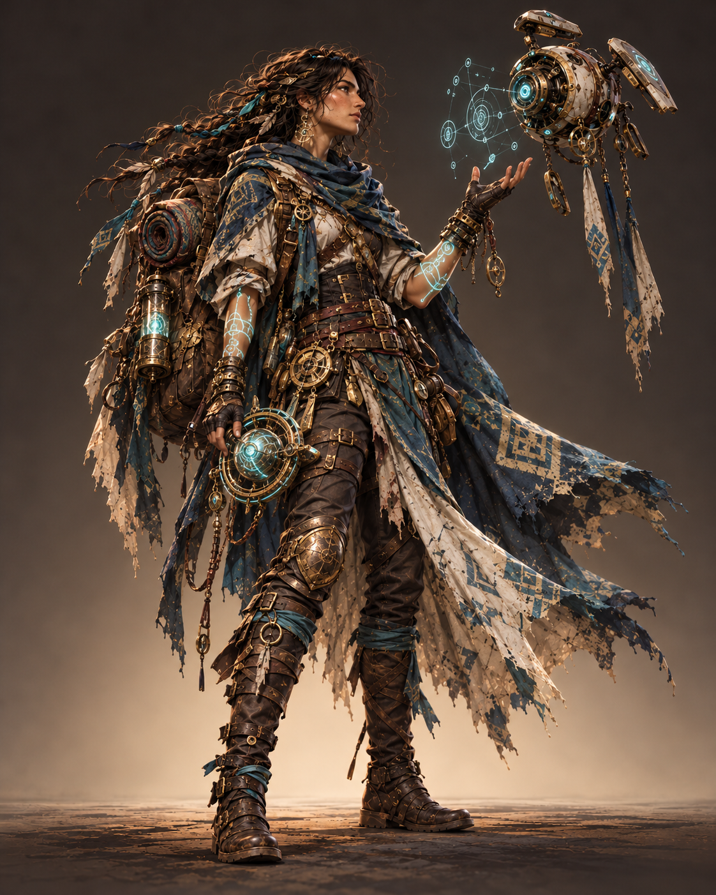
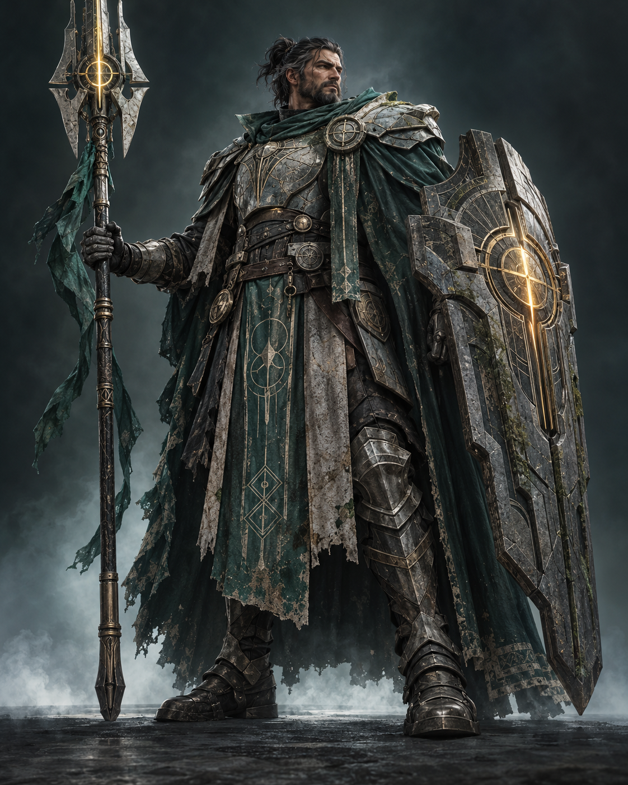

01 — O EXPLORADORKAEL VENN
O portador da marca
UM NOVO RPG DE AÇÃO SCI-FI
A última cidade humana está prestes a cair. Atravesse a fronteira, descubra o que existe além e decida o destino de um mundo esquecido.
E agora, cada escolha pode acender uma nova era — ou apagar o que resta.
Em Eclipse: Fronteira Zero, você é Kael, um explorador marcado por uma tecnologia que ninguém compreende. Em um planeta dividido entre ruínas e territórios selvagens, alianças mudam, perigos evoluem e nenhuma rota é segura por muito tempo.
Conheça a história ↗A CIDADE TERMINA AQUI
Há 40 anos, uma anomalia cobriu o céu e silenciou as estrelas. A humanidade construiu Véspera ao redor do último reator — e chamou tudo além dos muros de zona morta.
Agora, sinais de vida chegam da fronteira. E alguém está respondendo.
Encontre seu lugar ↗Aliados, rivais ou algo entre os dois.
Escolha com cuidado.

01 — O EXPLORADORO portador da marca

02 — A FORASTEIRAFala com as máquinas

03 — O SENTINELAO último guardião
Prepare-se para atravessar
a fronteira.
O jogo completo. O começo da sua história.
Uma experiência para quem vai mais longe.
Valores ilustrativos para demonstração. Disponibilidade e preços finais serão divulgados em breve.
A FRONTEIRA ESTÁ CHAMANDO
Deixe seu contato para receber novidades sobre o jogo, personagens e lançamento.